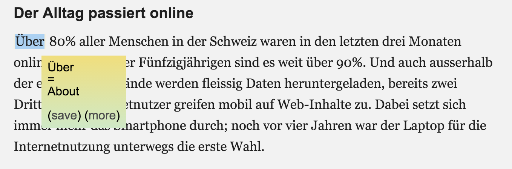
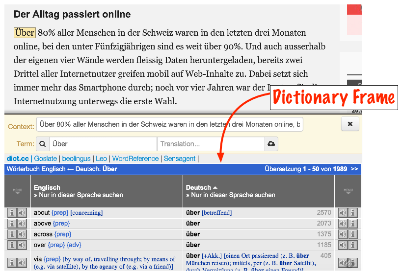
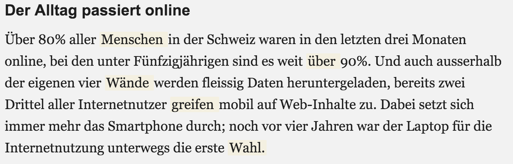
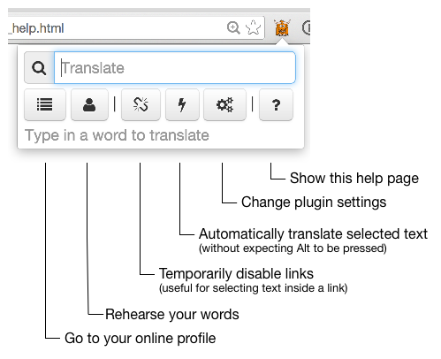

The Zeeguu Plugin
Disclaimer
Zeeguu is a personal research project. Several people have voluntarily contributed to bring it to the point where it is good enough for you to use and benefit from it. However, nobody works on it full-time, and thus, if you find problems with it please let us know. We are thankful for feedback. Moreover, the project is open-source, so if you want to contribute contact us!
Is this you?
You are learning a new language and you are making good progress. You achieved a good level already, you know the basics of grammar, and even dare to talk to your old neighbour about the weather. However, approaching news articles, blogs, emails, or the facebook wall of your friends who speak that language is still far from being fun. The main reason is that too often you still encounter a word that you don't understand. You wish that you could accelerate the rate at which you acquire the vocabulary of this new language.
You tried flash cards but they bore you. You tried DuoLingo but you gave up. The first has the disadvantage of being boring... words are out of context, and it bores you to death. You don't do it anymore, not even when you are on the toiet and forgot to bring a good book. The second forces you to read texts which are not interesting. You don't care about their content.
However, you know that you remember something better if you are emotionally involved, and you can get yourself to read in the new language if you are curious about the text. Thus, it would be cool if you could study vocabulary in the context of texts that are interesting to you: the facebook wall of your friends, a newspaper in the language you are learning, or maybe an interesting blog.
If you discovered yourself at least partially in the previous lines, then this project could be useful for you.
Environmental Learning
Once you have passed a certain knowledge threshold in a foreign language, you are ready for what is called environmental learning. This is, learning things in their natural context.
A famous open source hacker, Richard Stallman, told the story once of the way he learns a new language. Once he has learned the basic hundred words, and a bit of grammar, he immerses himself in reading children's books. After that, he moves on to reading other things that interest him.
The goal of Zeeguu, is to support you in accelerating your vocabulary acquisition
The plugin provides you with translations for the words that you are looking up. It also automatically uploads to your online profile the word, translation, and context if you save them. In this way, you can get later personalized exercises and better translations.
Note: The next section assumes that you know what a zeeguu profile is, and that you have created an account on the Zeeguu website, installed the plugin locally, and declared a langauge that you are learning.
Your Vocabulary Profile
At the center of all the apps in the Zeeguu ecosystem lays your vocabulary profile. That is, an active way of tracking and estimating your current knowledge of the vocabulary of the target language.
The profile contains all the words that you have ever looked via this plugin or other apps in the ecosystem. If for a given word you didn't like the default translation, and uploaded a separate word that is also stored.
One final aspect that is stored in your profile is the context in which you looked up the words. In the case of words that are looked up in web pages, the context is the sentence in which the word was looked up, together with the address of the page in which the word was found.
Why is the profile important?
The more precise the estimation of your current knowledge of the vocabulary of the desired language is available, of the words you learn, and the words that you still don't know, and the context in which you have already encountered those words in the past, the easier is to achieved several awesome things.
Let us take several examples:
- If the relative importance of the words that you are learning, would be known, then rehearsal could prioritize those most important. Especially when you don't have too much time.
- As you are rehearsing the words that you are learning you could use the context in which you originally found them to make them fixate better.
- If the times when a word has been seen in the past are known, then the times when these words should be repeated can be targeted based on the well-known principle of spaced repetition.
- You could get recommendations of texts that are likely to be interesting for you and are of the appropriate difficulty.
Some of this work is already done, and some is still future work. However, as you can probably imagine, a critical part of the system is intercepting the words that you need translations for, and their contexts.
Translating Words in Pages
When you hold Alt pressed and select a word a popup appears with the corresponding translation as you can see in the figure below where the user has selected the German word Über (which in English means About).

ProTip: The fastest way to select a word is to double-click it.
If you are happy with the translation, and want to save the word to your online profile, click on the save link. The popup disappears, and the word together with the translation are uploaded to your online profile.
External Dictionaries
Sometimes no good translation can be automatically suggested. Sometimes the suggested translation does not feel good enough. And sometimes you would like to know alternate translations of the word.
In these cases, if an external dictionary exists for the pair of languages that you are learning, and you are already speaking, the plugin can display it. You click on the More link and the external dictionary is displayed as in the example bellow:

Not all dictionaries can be embedded in the mini-window. If you have a favorite one, and would like it added, please send us an email with the link to it.
Being a good citizen: contributing translations
Since the original translation was not good enough, but you found a good translation in the external dictionary, you can upload the translation to the system. This is good for you since next time you will encounter the word, your translation will be available witout requiring the external dictionary anymore. And it is good for others, since in some cases your translations would be made available also for other users.
To contribute a translation, when the external dictionary is displayed, you can type it in the Translation field it gets automatically uploaded to your profile when you close the external dictionary mini-window.
If no external dictionary is available, it would still be awesome if you could look it up in a third-party dictionary and contribute a translation. Remember, that translating the word means that you won't have to look it up again. And the translation will be available also on all your devices.
Since this translation might be in some cases displayed for other users, it's important that you always work with the two languages that you have declared in your settings.
ProTip: you don't actually have to type the translation; it is sufficient that you select the corresponding word in the dictionary window and the translation box will be filled automatically. You either use the
Your Words Highlighted
The words that you have looked up in the past are highlighted in every page that you visit as exemplified in the picture below. We are working on having different colors for words that you have already learned and words that you don't know very well yet.

The Mini-Window
The second way in which you can interact with the Zeeguu plugin is via its mini-window accessible when you click the Zeeguu icon in the browser toolbar. The figure bellow shows the mini-window which provides you with two things.
- A "translate" edit box for quickly looking up definitions.
- A toolbar with six action buttons described in the figure.

Work Before Play (Experimental Feature)
Imagine that one day you realize that you go too often to a given website: be it Facebook, Twitter, or Inbox. Your education has also taught you that fun should come only after work so you enable the Work Before Play feature of the Zeeguu in Chrome.
Now, Zeeguu will intercept your navigation to any of the afore-mentioned sites and always give you a vocabulary exercise before allowing you to open the site in a new tab. This way you will be forced to do a bit of extra work before your leisurely socializing online.
The list of websites who are intercepted by the Work Before Play feature can be set in the plugin preferences.
Data Privacy
When you save a translation, the word, translation, and context are uploaded to the server. Note that by context we mean the surrounding sentence.
The context can not always be extracted, so there is no guarantee that it will always be uploaded.
When you lookup a translation, the date of the lookup is also sent to the server. Maybe in the future the context will also be sent.
The communication between all the zeeguu apps and the zeeguu server is always encrypted. We try to keep the server secure, but no security is perfect, and it could be that one day somebody will eventually break into our sever and steal all your words and translations. This is why we advise you not to upload any secret translations, or contexts that are sensitive.
Get In Contact
Send your questions or ideas regarding the plugin to me@mir.lu
Version History
Version 1.280
- Refactored the interaction. Now using popups with one word translation when available.
- First draft of this page.
Version 1.270
- Added a help button
- When user clicks on the toolbar button and the user must login, the redirect opens the popup instead of the dictionary.